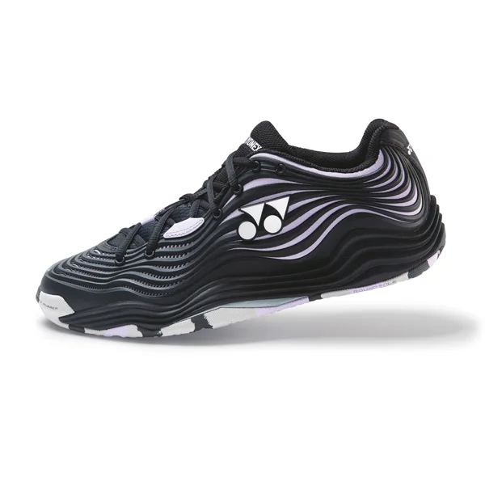
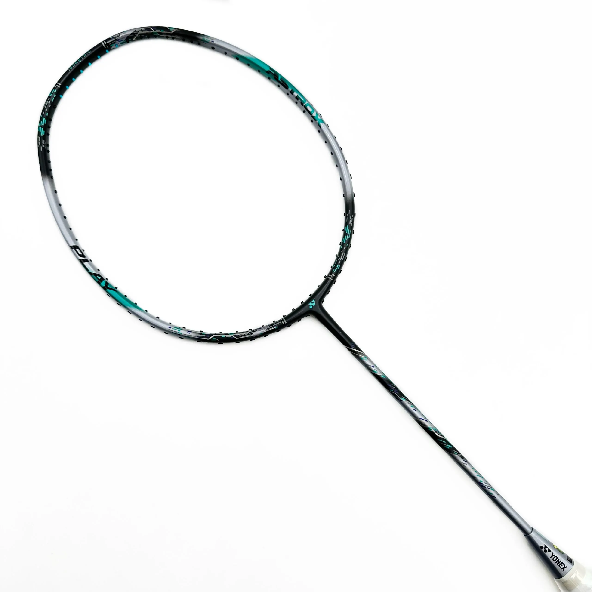
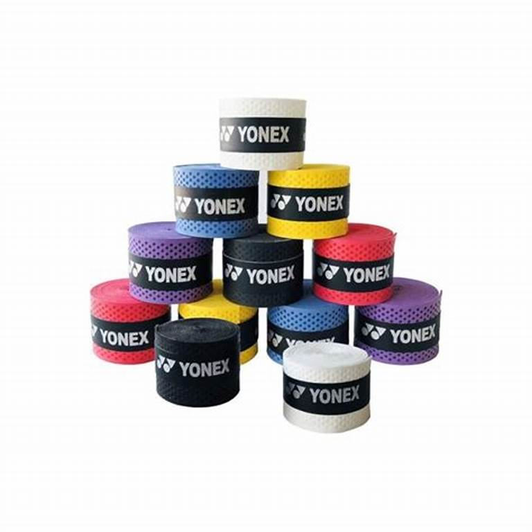

รองเท้าแบดมินตัน แบดมินตันเป็นกีฬายอดนิยม เนื่องจากอุปกรณ์และสถานที่เล่นหาง่าย ราคาไม่สูง ในการเล่นต้องอาศัยทั้งความคล่องแคล่ว ความสมดุลในการทรงตัว และความทนทานของกล้ามเนื้อและประสิทธิภาพของระบบหายใจ (Respiratory system) โดยผู้เล่นต้องมีการเคลื่อนไหว โดยจะมีทั้งวิ่งตรง สไลด์ออกด้านข้างซ้ายขวา หยุดแล้วออกตัวอย่างทันที รวมถึงการกระโดด ดังนั้นรองเท้าแบดมินตันจึงมีลักษณะเฉพาะ มีการยึดเกาะพื้นคอร์ต ให้ความมั่นคง ตอบสนองการหยุดและการออกตัวอย่างกะทันหัน การใส่รองเท้าที่มีลักษณะเฉพาะจึงเป็นสิ่งจำเป็น ทั้งนี้รองเท้าแบดมินตันที่มีคุณภาพสูง จะช่วยลดโอกาสการเกิดอุบัติเหตุ มีประสิทธิภาพในการเกาะพื้น เคลื่อนไหวดี ช่วยให้ผู้เล่นสามารถเล่นได้อย่างเต็มที่

แร็คเกต1. พัฒนาการทางด้านร่างกาย กีฬาแบดมินตันทำให้เด็กได้ออกกำลังทุกส่วน เป็นการฝึกกล้ามเนื้อมัดเล็กและมัดใหญ่ เพิ่มความคล่องแคล่วให้กับร่างกาย อีกทั้งยังเป็นการฝึกความยืดหยุ่นของร่างกาย เพราะจะต้องมีการกระโดด การย่อ การก้าวหน้า ถอยหลัง การเดิน และการวิ่ง ที่ทั้งหมดนี้จะช่วยทำให้ลูกได้กล้ามเนื้อที่แข็งแรง ทั้งยังทำให้ปอดและหัวใจแข็งแรงอีกด้วย 2. พัฒนาการทางด้านจิตใจ ประโยชน์ของการเล่นกีฬาช่วยให้ร่างกายลูกได้หลั่งฮอร์โมนแห่งความสุข (Endorphins) ซึ่งจะช่วยให้เด็ก ๆ มีพัฒนาการทางด้านจิตใจและอารมณ์ที่ดี ร่าเริง ผ่อนคลาย ช่วยลดความเครียด อีกทั้งยังช่วยให้ระบบหมุนเวียนเลือดทำงานเป็นปกติ ร่างกายยังได้รับออกซิเจน และลูกยังได้ใช้พละกำลังที่มีในทางที่ถูกต้องด้วย 3. พัฒนาการทางด้านสมอง ประโยชน์ของแบดมินตันช่วยให้ลูกได้ใช้สมองในการคิด การวางแผน มีสติ เพราะการเล่นแบดมินตันจะต้องใช้ระบบประสาททุกส่วนทำงานร่วมกัน เพื่อช่วยในการเคลื่อนไหวร่างกาย ทำให้ระบบประสาทสั่งการและตอบสนองได้อย่างแม่นยำ 4. ฝึกทักษะการเข้าสังคม กีฬาชนิดนี้ช่วยฝึกให้ลูกได้รู้จักเข้าสังคม ไม่ว่าจะเล่นแบบเดี่ยวหรือแบบทีม โดยลูกจะมีโอกาสได้เรียนรู้ในการปรับตัวให้เข้ากับสิ่งแวดล้อม ช่วยให้ลูกกล้าแสดงออก และยังเป็นการเปิดโอกาสให้ลูกได้สร้างมิตรภาพดี ๆ กับเพื่อนใหม่ เมื่อพาลูกออกไปเล่นแบดมินตันในสนามกีฬาสาธารณะ 5. ฝึกทักษะด้านการตัดสินใจ แบดมินตันต้องใช้ความว่องไว การเคลื่อนที่ และการตัดสินใจในการที่จะหวดลูก ดังนั้นกีฬาชนิดนี้จะช่วยให้ลูกกล้าที่จะตัดสินใจมากขึ้น ซึ่งเป็นการช่วยเสริมความมั่นใจ และความฉับไวในด้านการคิดและการลงมือทำ

กริปไม้แบดกริปผ้า ในอดีตนิยมทำจากผ้าฝ้าย เพราะมีคุณสมบัติดูดซับน้ำได้ดีเยี่ยม จึงเหมาะสำหรับคนที่มีเหงื่อออกมาก แต่ในปัจจุบันก็มีทางเลือกอย่างผ้านาโนหรือผ้าไมโครไฟเบอร์ที่มีคุณสมบัติในการซึมซับน้ำได้ดีพอ ๆ กัน แต่มีจุดเด่นคือ สามารถดูดซับฝุ่นและสิ่งสกปรกต่าง ๆ ได้ดีกว่า ทั้งยังระบายอากาศได้ดีและแห้งเร็ว ซึ่งช่วยลดปัญหาผ้าเหม็นอับชื้นจากกลิ่นเหงื่อได้ กริปยางสังเคราะห์ หรือกริป PU มีส่วนประกอบหลักคือ โพลียูเรเทรน เป็นทางเลือกที่เหมาะสำหรับคนที่ต้องการความนุ่มกระชับมือ โดยกริปยางจะมีทั้งแบบบางและแบบหนา รวมถึงมีผิวสัมผัสทั้งแบบเรียบและแบบเกลียว (มีแกน) เนื้อยางสังเคราะห์มีข้อดีคือ จะมีค่าความเสียดทานในตัวทำให้ยึดเกาะได้ดี ช่วยให้รู้สึกได้ว่าจับได้แน่นไม่หลุดมือนั่นเอง กริปแบบมีแกนหรือกริปกระดูกงู เป็นกริปที่มีความหนากว่ากริปยางสังเคราะห์แบบอื่น โดยเมื่อพันด้ามแล้ว ด้ามจับจะมีลักษณะเป็นร่องคลื่นเพื่อล็อกและสร้างความกระชับนิ้วในการจับ เนื้อยางที่นูนเป็นสันขึ้นมาจะมีความนุ่มมือมาก ช่วยไม่ให้ไม้ลื่นหลุด อย่างไรก็ตาม สำหรับคนที่เพิ่งเริ่มใช้ ก็อาจจะต้องทำความคุ้นเคยในช่วงเริ่มต้นก่อนค่ะ.
